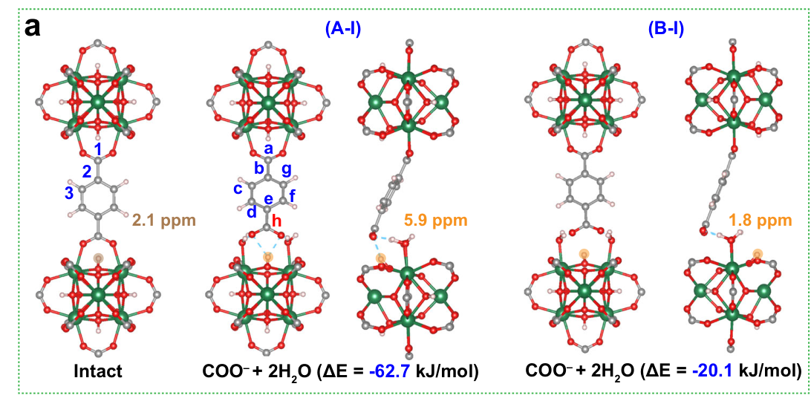

长程有序性Long-range order
PXRD 主要检验周期性结构的衍射特征。保留特征峰，并不能排除部分局部配位发生改变。PXRD probes diffraction from periodic order. Retaining characteristic peaks does not exclude changes at a fraction of local coordination sites.
FU 等 · 2026 · 局部结构与稳定性FU ET AL. · 2026 · LOCAL STRUCTURE AND STABILITY
PXRD 仍然像原来的晶体，为什么 NMR 已看到不同环境？从局部配位、空间相关与计算候选，理解“稳定”之中的结构变化。Why can PXRD retain a familiar pattern while NMR detects a new environment? Follow local coordination, spatial correlations and calculated candidates to examine structural change within a “stable” framework.
Yao Fu · Yifeng Yao · Subhradip Paul · Kenji Mochizuki · Gaël De Paëpe
Nature Communications 17, 3805 (2026)
UiO-66 常被视为耐水 MOF。本文在室温吸水后观察到：PXRD 图谱仍类似，固态 NMR 却出现新的羧酸碳信号。多维 NMR 与 DFT 联合支持一种可逆过程：连接体的一端羧酸根脱离原有 Zr 配位，形成被水和 μ₃–OH 氢键稳定的悬挂端；脱水后恢复。UiO-66 is commonly regarded as water-stable. After room-temperature hydration, its PXRD pattern remains similar but solid-state NMR shows a new carboxyl-carbon signal. Multidimensional NMR and DFT support a reversible process: one carboxylate end disengages from Zr coordination and is stabilized by water and μ₃–OH hydrogen bonds; drying restores the original environment.
PXRD 主要检验周期性结构的衍射特征。保留特征峰，并不能排除部分局部配位发生改变。PXRD probes diffraction from periodic order. Retaining characteristic peaks does not exclude changes at a fraction of local coordination sites.
¹³C 与 ¹H 的位移和空间相关性对局部环境敏感。新信号需要通过多种实验和候选结构交叉解释。¹³C/¹H shifts and spatial correlations are sensitive to local environments. New signals require cross-checks with complementary experiments and structural candidates.
“悬挂”不等于连接体整体进入溶液，也不等于框架已经整体坍塌。本文提出的是局部、可逆的连接变化。A dangling end does not mean the entire linker has dissolved or the framework has collapsed. The reported change is local and reversible.
主文图 1 比较新鲜、不同含水量和再次干燥的样品。下列按钮只选择已报告的状态；没有在样品之间插值，也不把水数换成相对湿度。u.c. 指完整晶胞。Main Fig. 1 compares fresh, differently hydrated and redried samples. Buttons select reported states only: no interpolation or conversion of water counts into relative humidity. u.c. denotes a full unit cell.
活化样品在 120 °C 真空下处理约一天；吸水可通过环境暴露或对 50 mg 粉末加水并轻轻研磨实现。再次干燥使用 120 °C 真空过夜。看起来仍是干粉，不代表孔内没有水。Activation uses vacuum at 120 °C for about one day. Hydration is achieved through ambient exposure or adding water to 50 mg of powder followed by gentle grinding. Redrying uses overnight vacuum at 120 °C. A powder that looks dry can still contain pore water.
所用完整晶胞为 Zr₂₄O₁₆(OH)₁₆(BDC)₂₄，含 24 个 BDC²⁻ 连接体，共 96 个芳香氢。每个水有两个氢，因此定量 ¹H 积分的换算为：The full unit cell is Zr₂₄O₁₆(OH)₁₆(BDC)₂₄, with 24 BDC²⁻ linkers and 96 aromatic protons. Each water contributes two protons, giving the quantitative ¹H-integral conversion:
SI 图 S1 的例子：水氢积分 55、芳香氢积分 100，得到 26.4，样品记作约 26 H₂O/u.c.。滑块只演示这个计数公式，不预测悬挂端比例、吸附等温线或反应速率。SI Fig. S1 uses water integral 55 and aromatic integral 100, giving 26.4, labelled approximately 26 H₂O/u.c. The slider illustrates counting only; it does not predict dangling fractions, adsorption isotherms or rates.
需区分吸附水与可能重叠的 μ₃–OH 贡献，并让信号充分弛豫。本文测量 ¹H T₁，再采用 2–3 s 的循环延迟。CP 谱的峰高不能未经校正直接代入定量公式。Adsorbed water must be distinguished from overlapping μ₃–OH contributions, and signals must sufficiently relax. The authors measure ¹H T₁ and use 2–3 s recycle delays. CP peak heights cannot be inserted into a quantitative formula without appropriate corrections.
C1 是原有配位羧酸碳，C4 是新出现的羧酸碳；C2/C3 属于芳环。信号归属并非仅凭一个峰的位置。C1 denotes the original coordinated carboxyl carbon and C4 the new carboxyl carbon; C2/C3 belong to the aromatic ring. Assignment uses more than the position of one peak.
DNP 在约 100 K、AMUPol 极化剂条件下把 NMR 信号增强约 60 倍。这是测量灵敏度的提升，不是吸水量或吸附性能增强 60 倍。极化可由表面向内部传播，并不证明自由基进入了每个微孔。DNP at about 100 K with AMUPol enhances NMR signals roughly 60-fold. This improves measurement sensitivity, rather than water uptake or adsorption performance. Polarization can propagate inward from the surface; enhancement does not prove that radicals enter every micropore.
DFT 比较 A 类（悬挂端朝向 μ₃–OH）与 B 类（背离 μ₃–OH）。最受联合证据支持的 A-I 保留去质子化 COO⁻，并由两分子配位水及邻近 μ₃–OH 的氢键稳定。羧酸端与近邻 μ₃–OH 质子的距离约 2.3 Å；B-I 约 4.6 Å。DFT compares class A, with the dangling end pointing towards μ₃–OH, and class B, pointing away. The jointly favoured A-I retains deprotonated COO⁻ stabilized by two coordinated waters and hydrogen bonding to neighbouring μ₃–OH. The carboxyl carbon is about 2.3 Å from its nearest μ₃–OH proton, compared with 4.6 Å in B-I.

约 6 ppm 的 μ₃–OH 环境与 A-I 的计算吻合；B-I 的 μ₃–OH 仍在约 1.8 ppm。¹H–¹³C 相关中 C4 缺少孤立 μ₃–OH（0–3 ppm）交叉峰，对 B 类构型形成额外约束。距离和峰缺失需要结合灵敏度、运动与混合时间解释。The approximately 6 ppm μ₃–OH environment agrees with A-I calculations; B-I remains near 1.8 ppm. C4 lacks a correlation to isolated μ₃–OH at 0–3 ppm, providing an additional constraint on class B. Distances and absent cross-peaks must be interpreted with sensitivity, motion and mixing time.
下列 11 个条目包含 SI 的 A-II 和 A-IV 变体。ΔE 来自图 S11/S12，¹³C 位移来自表 S2，μ₃–OH 位移来自表 S3。候选结构 a 与 h 分别为同一模型内仍配位和悬挂的羧酸碳。These 11 entries include the SI variants of A-II and A-IV. ΔE comes from Figs. S11/S12, ¹³C shifts from Table S2 and μ₃–OH shifts from Table S3. Within each candidate, a and h denote coordinated and dangling carboxyl carbons.
图中 Δδ = δ(h) − δ(a)，对照 320 H₂O/u.c. 的实验 C4 − C1 = 175.1 − 171.5 = 3.6 ppm。计算的绝对位移存在系统偏移，作者主要比较相对位移与相关性模式。实验参照线不是每个候选的独立拟合结果。The plot shows Δδ = δ(h) − δ(a), compared with experimental C4 − C1 = 175.1 − 171.5 = 3.6 ppm for 320 H₂O/u.c. Calculated absolute shifts have systematic offsets; relative shifts and correlation patterns constrain interpretation. The experimental reference is not a separate fit to every candidate.
| 候选Candidate | ΔE / kJ mol⁻¹ | δ(a) | δ(h) | Δδ | δ(μ₃–OH₅) |
|---|
所有位移单位 ppm。A-II void 1 为 +49.5 kJ mol⁻¹，void 2 为 +50.1；主文简图只呈现后者，不能合并成同一数值。All shifts are ppm. A-II void 1 has +49.5 kJ mol⁻¹ and void 2 +50.1; the main simplified figure shows the latter, so the variants must remain distinct.
ΔE 是所选模型的形成能差，不是自由能 ΔG、活化能或室温布居。这里不由 ΔE 计算 Boltzmann 比例或水解寿命。能量有利的质子化 A-IV 仍给出不符实验的相对羧酸碳位移；能量一项不足以确定结构。ΔE is a formation-energy difference for the selected models, rather than ΔG, an activation barrier or a room-temperature population. No Boltzmann fractions or hydrolysis lifetimes are calculated. Energetically favourable protonated A-IV still has a relative carboxyl shift inconsistent with experiment; energy alone does not establish the structure.
SI 图 S13 对 160 H₂O/u.c.、羧酸位点 ¹³C 标记的样品进行室温直接极化（DP）测量。根据 T₁ = 38 s 采用 200 s 循环延迟，得到约 30% 悬挂羧酸端、70% 原有羧酸环境。SI Fig. S13 uses room-temperature direct polarization (DP) on a carboxyl-¹³C-labelled sample with 160 H₂O/u.c. A 200 s recycle delay is chosen from T₁ = 38 s, giving about 30% dangling carboxylate ends and 70% original carboxylate environments.
分母是羧酸碳环境，不是脱落到水中的连接体数量，也不是 30% 的晶体坍塌。普通 CP 或 DNP 增强谱的峰面积受转移效率影响，不能直接取代这项 DP 定量。The denominator is carboxyl-carbon environments, rather than dissolved linkers or collapsed crystal fraction. Ordinary CP and DNP peak areas depend on transfer efficiencies and cannot directly replace the DP quantification.
长混合时间 ¹³C–¹³C 谱检测到 C1–C4 而未检测到 C4–C4，支持悬挂位点主要分散、连接体通常保留一端配位的解释。未见交叉峰是有检测边界的结构约束，不是“每一条连接体都已逐个定位”的证明。Long-mixing ¹³C–¹³C spectra detect C1–C4 but not C4–C4, supporting mostly dispersed dangling sites and linkers retaining one coordinated end. Missing cross-peaks constrain structure within detection limits; they do not locate every linker individually.
周期 CP2K 使用 PBE + D3、Γ 点及 400 Ry 截断优化结构，再以更大基组和 SCCS 隐式溶剂计算能量。NMR 使用截断封端簇、Gaussian GIAO/revTPSS 和 SMD；¹³C/¹H 参照金刚烷。两类计算承担不同任务。Periodic CP2K uses PBE + D3, Γ sampling and a 400 Ry cutoff for optimization, followed by larger-basis/SCCS energy calculations. NMR uses capped clusters with Gaussian GIAO/revTPSS and SMD, referenced to adamantane. The two calculations serve different purposes.
SI 图 S3 的样品在吸水放置一年后先干燥，再进行 CP/PXRD；结果类似新鲜样品。它支持处理后可恢复，不能独立证明湿态一年毫无局部变化、没有 Zr 浸出或吸附性能始终不变。The SI Fig. S3 sample is dried after one year with adsorbed water, then measured by CP/PXRD. Similarity to the fresh sample supports recovery after treatment; it does not establish an unchanged hydrated environment, no Zr leaching or constant adsorption performance throughout that year.
公开审稿记录帮助厘清定量证据：修订后增加了长延迟 DP 测量。解释采用最终正文和 SI，不采用审稿过程的旧面积比例。SIMPSON 用于偶极再耦合模拟；本讲解不重跑其代码或把模拟曲线当作新的距离测量。The transparent peer-review file clarifies that long-delay DP quantification was added during revision. This explainer follows the final article/SI, rather than superseded peak fractions in review exchanges. SIMPSON is used for dipolar-recoupling simulations; this page does not rerun its code or present simulated curves as new distance measurements.
以下为讲解者延伸：如果 UiO-66 用来固定 REE 配体，工作液可能改变局部配位，却不显著改变 PXRD。因此应把配体连接状态、Zr/连接体浸出、孔隙以及选择性/循环性能与进料和解吸条件对应起来。本文自身没有测量 REE 容量或选择性。Explainer extension: if UiO-66 anchors REE-binding ligands, working solutions may alter local coordination with little PXRD change. Ligand attachment, Zr/linker release, porosity and selectivity/cycling should therefore be tested in the feed and stripping conditions. This article itself reports no REE uptake or selectivity.
继续阅读：UiO-66 与缓冲液Related: UiO-66 in buffers
继续阅读：双官能 UiO-66 的 Gd 吸附Related: Gd adsorption on dual-functional UiO-66
已阅读全部科学正文、图注、SI 和公开审稿文件，并核对正文图 1–3、补充图 S1–S16 与表格。计数滑块是教学换算；候选能量及位移来自原始表图。未复现量子化学或自旋动力学计算。All scientific article text/captions, SI and the transparent review file were read, and main Figs. 1–3, SI Figs. S1–S16 and tables inspected. The counting slider is a teaching conversion; candidate energies/shifts come from source figures/tables. Quantum-chemical and spin-dynamics calculations were not reproduced.